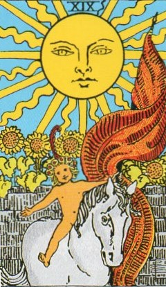
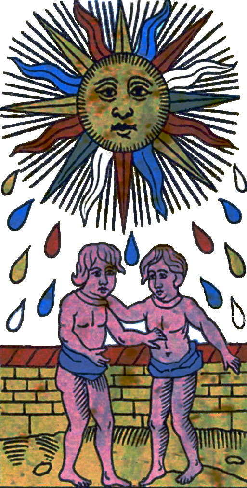
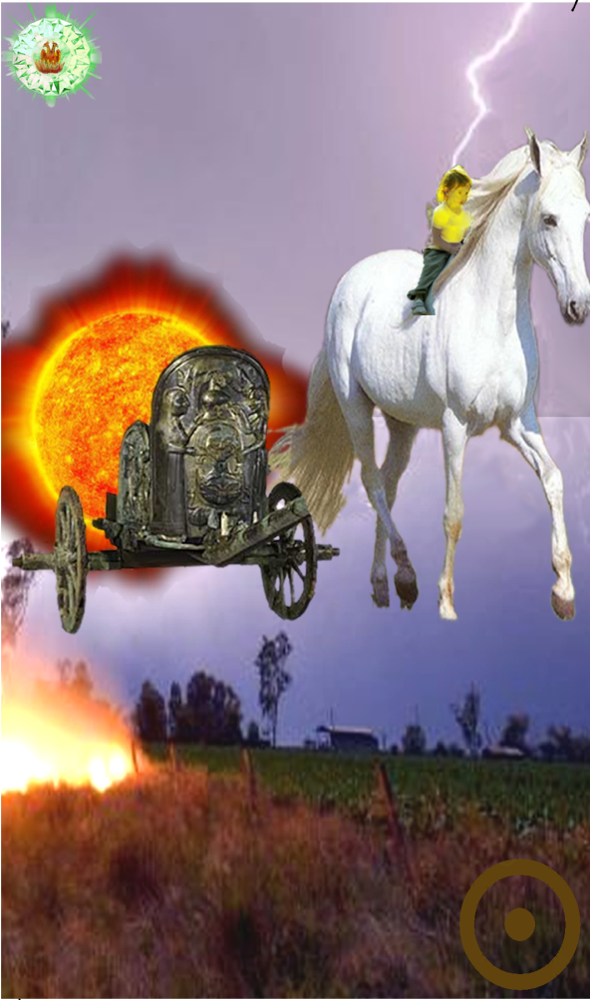
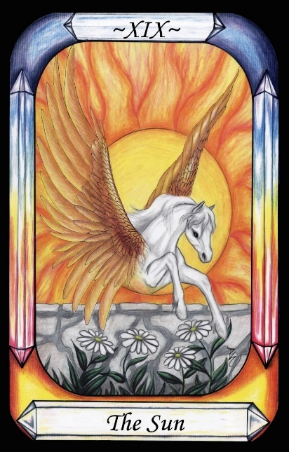

The Sun




Representation |
Phaethon, son of Apollo |
Meaning |
Warning against Boldness, Audacity, and Over-confidence, and the harm (destruction) they can cause. |
Opposite card |
The Magician, the demiurge as the Sun. Creation, not destruction. |
Function |
The Sun does not truly represent the Sun, but rather the son of the Sun - the son of Apollo, named Phaethon or Phaeton, who took dad’s Chariot for a drive and nearly destroyed the world.
[P65] To Apollo he gives up Boldness and Audacity, and over-confidence. [The Sun, Phaethon] (Tipareth)
RWS Imagery
In Waite’s card we simply see the Sun, sunflowers, a wall, and a child riding a horse and carrying a banner.
The Waite card appears to show imagery from the Phaethon myth, in which Phaethon is a son of Apollo This may be a subtle clue as to the meaning of the card, in that the relevant God is Apollo, not the Sun itself. The name of this card may be a subtle pun, saying Sun when it means Son.
Discussion
The Sun is the most significant “planet” in our heavens. Its glorious radiance makes possible life on Earth. Its mythology is too extensive to explore in this document.
It is, however, worth noting that in non-equatorial regions, the Sun and its effects wax and wane over a year, forming the seasons. This in turn links it to the Dying God mythology, as described by J. G. Frazer in The Golden Bough, and hence to all god forms that die and are resurrected each year, including Jesus Christ.
Also, the Sun can be seen as providing light as the result of nuclear Fire. Thus in the Pymander view, it belongs in the realm of Fire and operation, rather than being the true God, who is pure light, not derived from Fire.
Phaethon was the child of Apollo, but was schooled on Earth. Naturally, he boasted that his father was a God, and none of the other school children would believe him. So, he maneuvered his father into an unbreakable vow that he would do anything he could to prove to the children that Phaeton’s father was in fact Apollo.
Phaethon asked to drive the Chariot of the Sun across the sky for a day, and Apollo was forced to honour his vow.
Being young, Phaethon was unable to control the horses, and the Chariot carrying the Sun plunged too close to the Earth, lighting Fires and causing earthquakes. Jupiter was forced to kill him with a lightning bolt to save the Earth.
Thus, Phaeton’s need to prove himself to be superior resulted in his Death. This is the lesson of the Sun card - overreaching ambition can result in disaster.